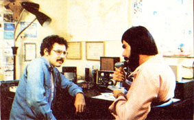
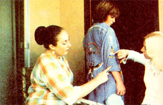
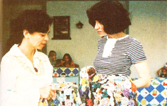
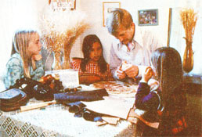

How To Make A Labor Co-Op Work For You
The formation and operation of the Los Angeles, California based labor cooperative, Free SIG (Special Interest Group)
By S. Libby Binder
November/December 1977
Bert Lance's financial difficulties may have been plastered all over the newspapers ... but that doesn't make them any more important, on an individual basis, than the dollar squeeze most of us "ordinary" folks now increasingly find ourselves in.
You know what I'm talking about: How, despite your best budgeting efforts, an unexpected shot for the family pet or an absolutely essential repair on the ole bike always seems to keep you dipping into next month's rent money.
Well, believe it or not, I've discovered a way to take care of most of those little budget bleeders for free (or mighty close to it). And you can too. All it takes is a little energy and a little commitment.
FREE SIG IS THE ANSWER
I belong to a Los Angeles, Californiabased labor cooperative called Free Sig. ("Sig" stands for Special Interest Group. The organization was first set up as an affiliate of the Mensa Society, and then opened to the public.) If my experience is any indication, a cooperative like ours can be just the "secret weapon" you need to make each month run out before your money does ... instead of the other way 'round.
Free Sig was created by guitar player and teacher Richard Johnson a little over a year ago. It was certainly the right idea at the right time, though, because-during its first 12 months the co-op blossomed from merely a "damned good idea" into a tight organization of 100 members offering each other 150 no-cost services.
And not odd-ball things that nobody really wants either! Free Sig members are exchanging "real live" services that any MOTHER reader can appreciate: appliance repairs, architectural renderings, automobile and bicycle renovations, child care, dance therapy, ham radio instruction, advice on herbs, leatherwork, training in natural childbirth, plumbing and electrical help, quiltmaking lessons, veterinary medicine, and yoga instruction ... to name just a few.
HERE'S HOW IT WORKS
The most unique feature of our co-op is that, unlike other organizations of this nature I've heard about, Free Sig's exchange of skills and services is not based on an hour-for-hour barter or trade. Instead, each member is expected only to commit a certain number of hours per week to the general labor pool".
How many hours? There's no hard and fast rule. You make that decision according to your own schedule. Furthermore, you're never required to put in any specified minimum amount of your time each and every week. As a matter of fact, the co-op now has so many members offering each other such a variety of services that many individuals belonging to the organization receive no more than one or two calls a month for their skills.
This flexibility works just as well when looked at from the other end, too. Nobody forces you to use any weekly minimum amount of Free Sig services or to stay within any maximum limitation either. You can coast along for months, if you like, and never call on the co-op for anything ... then ask for hauling and plumbing help, instructions in sewing a caftan, veterinary services, automobile repairs, and an astrology chart all on the same day.
It's very easy, by the way, to request any of Free Sig's services. Let's say your kitchen needs a paint job. OK. You just look through the co-op's directory, contact Joe the Painter, and he schedules the assignment ... almost always within a week of your request. If, however, Joe is currently in great demand and has three Sig jobs already lined up ahead of yours ... no problem. A note will be placed in the monthly supplement to the co-op's directory explaining that Joe is working off a "backlog" and shouldn't be scheduled by anyone else for a while. That takes the pressure off him ... and, within two or three weeks at the most, you'll still have your shiny "new" kitchen.
Incidentally, you'll buy the paint for the job. Free Sigers contribute only time 'n' talent-freely and without obligation-when they accept an assignment from a fellow member of the group. The recipient is expected to handle any and all direct costs that are involved.
A word about commercialization: It's a no-no. Joewhile sprucing up the kitchen-may well notice that your den could use a coat of paint too. But, according to Free Sig rules, he cannot ask to do the job for a fee. If you're impressed enough by his work to want to hire him at his regular rates, however, that's OK. As long as you do the asking.
As a related point, you may not profit from the sale of a product which was created or fabricated with the help of a co-op service. If you start selling-say T-shirts that were designed for you by a Free Sig member, then, you're breaking a rule. And you're breaking that rule because you're exploiting a fellow Free Siger, and that's not tolerated.
Of course, one especially nice thing about our skills and services exchange is the fact that its few "rules" seem to work really well without any organized attempt to enforce them. The co-op operates entirely on the honor system. No one collects vouchers, keeps track of time, or checks up on you. If you're a member, it's 'cause you want to be . . . and if you really want to be a Siger, you'll see that you do what you're supposed to do to make the exchange work.
YOU CAN ORGANIZE YOUR OWN FREE SIG
If this moneysaving "I'll scratch your back if you'll scratch mine" idea appeals to you, I see no reason why you can't become the "Richard Johnson" of your own town or neighborhood and start a skills and service exchange of your own.
You'll need some basic office supplies -paper, pencils, pens, etc.-of course. And access to a typewriter and a copying machine and/or mimeograph would be helpful. If you're really working on a shoestring, though, I'll betcha you could launch one of these co-ops with nothing but a pad of paper and a pencil.
Your most important tools will be [1] an information sheet, and [2] an application form.
The info sheet should anticipate-and answer! -all the questions that interested folks will have about your proposed exchange: What's the purpose of this organization ... what's in it for me ... what do I have to do ... what are my obligations ... what are the rules ... how do I request services? Try to put your basic facts together in an easily understood, widely appealing, enticing way. The more people you can attract and convert into members, the greater the diversity of services your co-op will offer and the more valuable it will be.
Your application form should ask for all the basics: name and address, telephone number, occupation and/or skills, plus the number of hours per week that each applicant is willing to pledge. You should also include a waiver designed protect you and other co-op members from lawsuits just in case something unexpected and disastrous happens because of a service that is rendered. Our clause-drawn up by Richard and a Free? Sig attorney-reads, in part: " . . . All persons who accept such services will indemnify and hold harmless the person or persons who perform the service... with respect to any claims, demands, or liability arising directly or indirectly from the service provided... An attorney in your area or the local Legal Aid Society can help you with this part of the form.
NOW SPREAD THE WORD!
All right. You've done the basics ... now broadcast the news! Tell friends and neighbors what you're doing. Advertise (if you can afford it) in the local paper (and put the bite on the paper's editor for a feature article about your skills and services exchange and what it can do for the publication's readers). Post notices on the bulletin boards of supermarkets, laundromats, and other stores in your area. Talk your co-op idea up around town! Get folks excited and involved by telling 'em what's in it for them. (And they really can benefit from one of these exchanges!)
If it's convenient for you to get a number of people interested in the co-op together some evening, so much the better. If that's impossible (or, for some reason, you even have difficulty taking phone calls), though, you can still do the organizing of your exchange entirely by mail. Just request-on all the notices that you post, in your newspaper advertising, etc-that interested parties write to you for more information and an application form ... and that they enclose a selfaddressed, stamped long envelope with their request. (That way, you'll both [1]"qualify" your prospects-sort the "lookers" from the "doers"and [2] keep yourself from being stuck with bills for all the start-up postage. You can take this idea another step further, too: When you mail back your info sheets and application forms, attach a note asking that a second SASE be returned with the completed form, That way, you'll then be all set to mail out your exchange's first Catalog of Services and Directory of Members.)
COMPILE THAT CATALOG AND DIRECTORY
As the completed applications are returned, compile your applicants' pro posed services into an alphabetical Catalog of Services. And, on a separate sheet or sheets of paper, list your Directory of Members (name, address, telephone
number, skill [s], and availability).
Make enough copies of both the catalog and the directory to mail to everyone in your new co-op (plus some extras for additional members that may soon come in) and mail them to everybody on your list. (With another note attached asking members to include a SASE with any future request for information.)
Eventually, as your co-op expands (ours did!), you can send out the Catalog of Services as part of your applications package. This will give potential members a better idea of the value they'll receive by joining your exchange ... butsince they won't receive a Directory of Members until they have joined-it'll leave control of the organization firmly in your hands.
Once things really get rolling, you might even (as Richard does) find yourself sending all co-op members a monthly update of new members and their skills and a status report on old members (who's on vacation, who now offers additional services, etc.).
Free Sig's founder, Richard Johnson -who has a real knack for organization-has even taken this idea one step further and cross-indexed the data in our catalog. He's assigned all the members of our exchange a code number and listed them under those numbers in our directory. Then, in the Catalog of Services, he's grouped the numbers under the various services offered, like this: CHILD CARE (4) (8) (23). Which makes it very convenient for us when we're looking up one or more members who off era particular skill or service.
BE RESPONSIBLE!
One special point about judging the qualifications of your co-op's members is in order here. If you want your exchange to really fly, you're going to have to be hardnosed enough to screen all the would-be members who profess to have either "professional" or "highly skilled" talents. After all, you don't want to discover-after the damage has been done! -that the guy who called himself a mechanic has, while acting out his fantasy, just busted the crankcase on another member's motorcycle!
IS IT WORTH IT?
If all this sounds like a lot of work, please let me hasten to emphasize that-once started-your coop should pretty much run itself. (Remember, it's based on the honor system. You don't have to collect vouchers or otherwise keep tabs on your members.) And everyone in the groupincluding you! should find the exchange saving you so much money (if you've done your originalorganizing in a business-like way) that you'll all say, "YES! It's worth it! "
On the other hand, if you'd rather not bother with all those requests for SASE's and you think you're entitled to a little something extra for the time and energy you're going to have to put in to get this thing off the ground ... well, you can have that too. Just ask for it! Richard Johnson, for instance, covers his paper, mimeographing, and other organizational expenses by charging each new Free Siger $5.00 at the time of registration.
So-if it takes this extra little frosting on the cake to get you fired up enough to organize your own labor exchange-I say, "Throw in the frosting." Believe me, it is worth the effort. Not only can one of these co-ops allow you to neatly sidestep a great many expenses that would otherwise put serious crimps in your family's budget ... but it can introduce you to interesting people you wouldn't ordinarily have met. And besides that, sharing your skills with others in this way is more than just "doing a job". . It's fun!
|
 Ham operator Alan Adler gives Stewart Sokolin instructions in mike technique. |
 George Szondy prepares one of his architectural renderings for a Free Siger. |
 Joanna Szondy uses her son to model embroidery she'll do for Christy Bingaman. |
|
 Cathy Thom shows the finer points of quilt making to author S. Libby Binder. |
 David Thom's three children watch as he does leatherwork for another member. |
Dance therapist Claudia Chapline teaches Monica Gyulai and Sandra Migliaccio |